Instrument Panel Upper Installation |
| 1. Install Instrument Panel Cushion NO.1 |
Peel off the release paper of the instrument panel cushion No.1. (When using a new part)
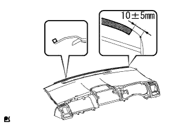 |
Install instrument panel cushion No.1.
| 2. Install Cooler Thermistor (Solar Sensor) |
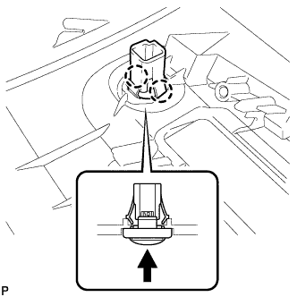 |
Engage the 2 claws and install the cooler thermistor (solar sensor).
| 3. Install Automatic Light Control Sensor |
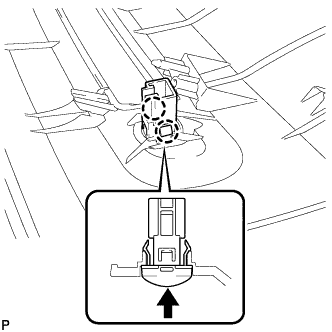 |
Engage the 2 claws and install the automatic light control sensor.
| 4. Install Instrument Panel Wire NO.2 |
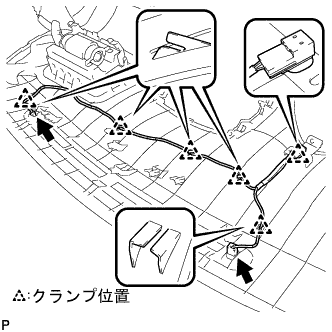 |
Connect the connectors.
Engage the 6 clamps and install instrument panel wire No.2.
| 5. Install Ion Generator (w/ Ion Generator) |
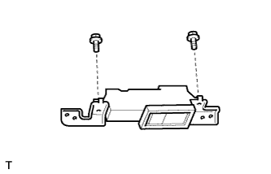 |
Install the ion generator to the bracket with 2 bolts.
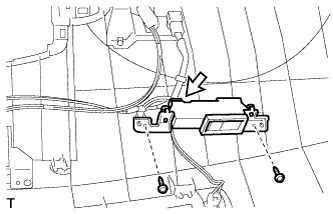 |
Install the ion generator w/ bracket with 2 screws.
Connect the connector.
| 6. Install Navigation Antenna Assembly (w/ Navigation System) |
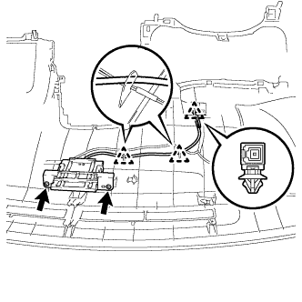 |
Install the navigation antenna assembly to the instrument panel upper w/ instrument panel passenger airbag assembly with the 2 screws.
Engage the 2 clamps.
Engage the connector clamp.
| 7. Install Navigation Antenna Assembly (w/ Navigation System & ETC) |
Install the navigation antenna assembly to the instrument panel upper w/ instrument panel passenger airbag assembly with the 2 screws.
Engage the 2 clamps.
Engage the connector clamp.
| 8. Install Instrument Panel Passenger Airbag Assembly |
 |
Install the instrument panel passenger airbag assembly to the vehicle front wall of the airbag door with the 5 vehicle front side hooks.
 |
Install the instrument panel passenger airbag assembly to the instrument panel upper with the 5 vehicle rear side hooks.
| 9. Install Instrument Panel Cushion NO.4 |
Peel off the release paper of the instrument panel cushion No.4. (When using a new part)
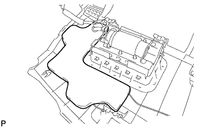 |
Install the instrument panel cushion No.4 to the instrument panel upper.
| 10. Install Instrument Panel Cushion NO.3 |
Peel off the release paper of the instrument panel cushion No.3. (When using a new part)
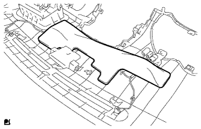 |
Install the instrument panel cushion No.3 to the instrument panel upper.
| 11. Install Instrument Panel Cushion NO.2 |
Peel off the release paper of the instrument panel cushion No.2. (When using a new part)
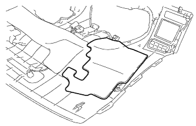 |
Install the instrument panel cushion No.2 to the instrument panel upper.
| 12. Install Instrument Panel Register Assembly NO.1 |
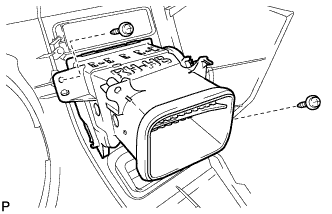 |
Install instrument panel register assembly No.1 with the 2 screws <B>.
| 13. Install Instrument Panel Register Assembly NO.2 |
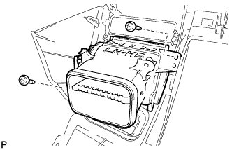 |
Install instrument panel register assembly No.2 with the 2 screws <B>.
| 14. Install Heater to Register Duct NO.3 |
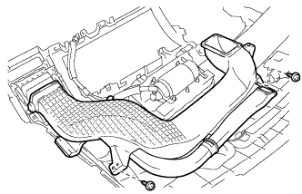 |
Install the heater to register duct No.3 with the 2 screws <B>.
| 15. Install Heater to Register Duct NO.1 |
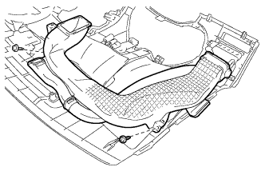 |
Install the heater to register duct No.1 with the 2 screws <B>.
| 16. Install Heater to Register Duct NO.2 |
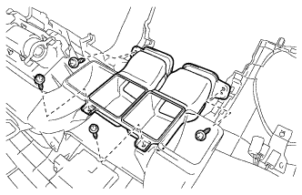 |
Install the heater to register duct No.2 with the 4 screws <B>.
| 17. Install Defroster Nozzle Assembly |
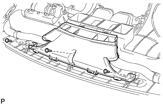 |
Install the defroster nozzle assembly with the 3 screws <B>.
| 18. Install Instrument Panel Cup Holder (Driver Side) |
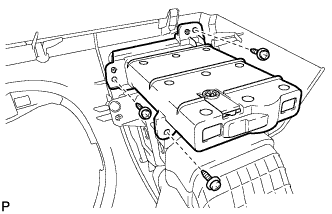 |
Install the instrument panel cup holder with the 3 screws <B>.
| 19. Install Instrument Panel Cup Holder (Front Passenger Side) |
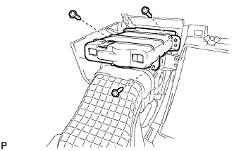 |
Install the instrument panel cup holder with the 3 screws <B>.
| 20. Install Instrument Panel UPR w/ Instrument Panel Passenger Airbag Assembly |
 |
Apply protective tape to the positions shown in the illustration.
Engage the 5 claws.

Engage the 4 clips and 3 claws.

Connect the connectors.
Install the 2 instrument panel passenger airbag assembly installation bolts <A>.
Install the instrument panel UPR w/ instrument panel passenger airbag assembly with the 2 screws <B>.

Remove the protective tape that was applied.
| 21. Connect Instrument Panel Passenger Airbag Assembly Connector |
 |
Connect the instrument panel passenger airbag assembly connector.
| 22. Install Instrument Panel Box Door Sub-assembly NO.1 |
 |
Insert instrument panel box door No.1 in the direction of arrow (1).
Insert instrument panel box door No.1 in the direction of arrow (2) so that the upper claws enter the inside of the instrument panel UPR.
 |
Engage the 3 clips and 3 claws.
 |
Install instrument panel box door No.1 with the 2 screws <B>.
Remove the protective tape that was applied.
| 23. Install Instrument Cluster Finish End Panel |
 |
Install the instrument cluster finish panel end.
| 24. Install Glove Compartment Door Assembly |
 |
Engage the 2 claws of the glove compartment door assembly hinge in the vehicle horizontal direction.
 |
Slightly deform parts A and B shown in the illustration in the direction of the arrows and engage the 2 stoppers.
Engage the claw, connect the glove compartment door stopper and install the glove compartment door assembly.
| 25. Install Instrument Panel Finish Panel LWR CTR |
 |
Engage the 6 clips and 4 claws.
 |
Install the instrument panel finish panel LWR CTR with the 2 screws <C>.
| 26. Install Position Indicator Housing Assembly |
Connect the connector.
 |
Engage the 7 claws and install the position indicator housing assembly.
| 27. Install Console Box Cover RR |
| 28. Install Shift Lever Knob |
 |
Turn the shift lever knob in the direction of the arrow shown in the illustration to install it.
| 29. Install Front Pillar Garnish RH |
 |
Remove the protective cover.
Install a new front pillar garnish clip to the garnish.
 |
Insert the guide at the front end.
Engage the front pillar garnish clip and clip, and install the front pillar garnish RH.
| 30. Install Front Pillar Garnish Corner Piece RH |
 |
Insert the 2 guides B.
Engage the 5 claws and 2 guides A, and install the front pillar garnish corner piece RH.
Remove the protective tape that was applied.
| 31. Install Front Pillar Garnish LH |
 |
Remove the protective cover.
Install a new front pillar garnish clip to the garnish.
 |
Insert the guide at the front end.
Engage the front pillar garnish clip and clip, and install the front pillar garnish LH.
| 32. Install Front Pillar Garnish Corner Piece LH |
| 33. Install Front Pillar Garnish Corner Piece LH |
| 34. Install Instrument Panel Register Assembly CTR |
 |
Connect the connector.
 |
Engage the 2 clips, 5 claws and 3 guides, and install the instrument panel register assembly CTR.
| 35. Install Instrument Panel Finish Panel End RH |
 |
Engage the 4 clips and install the instrument panel finish panel end RH.
| 36. Install Instrument Panel Finish Panel End LH |
 |
Engage the 4 clips and install the instrument panel finish panel end LH.
| 37. Install Combination Meter Assembly |
 |
Connect the connectors and temporarily install the combination meter assembly.
 |
Install the combination meter assembly with the 4 screws.
| 38. Install Instrument Cluster Finish Panel Assembly |
 |
Engage the 2 claws and 9 clips, and install the instrument cluster finish panel.
 |
Remove the protective tape that was applied.
| 39. Connect Battery Negative Terminal |
| 40. Inspect Airbag Warning Light |
 |
Check that the warning light comes on when the IG is turned ON.
Check that the warning light goes off approximately 6 seconds after the IG is turned ON.
| 41. Setting Procedure When Disconnecting/Reconnecting Battery Terminal |
)